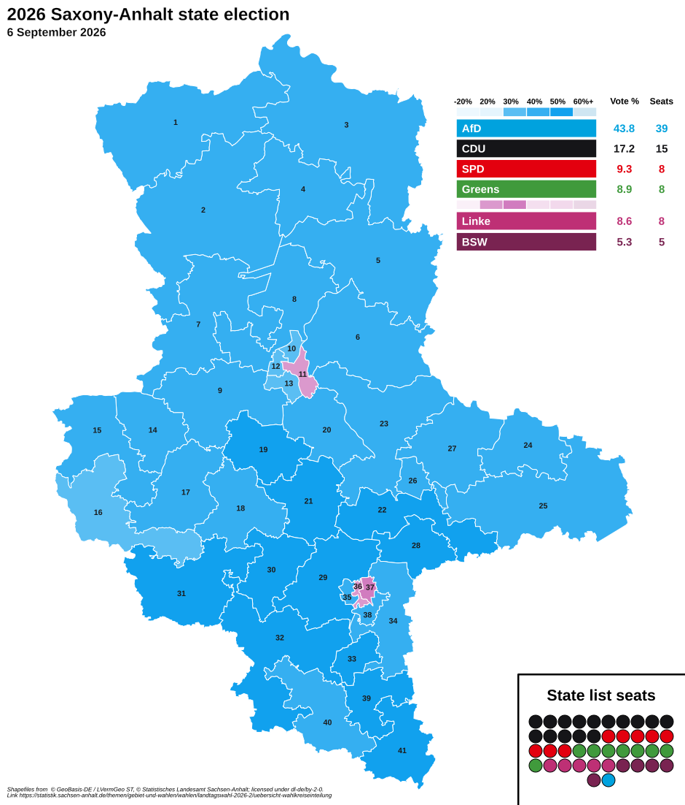

Alter
- Stärkste Kraft in allen Altersgruppen unter 60
- Kern: 30–59-Jährige (teils > 50 %)
- Ausnahme Ü70: CDU fast gleichauf
„Zwischen Systemopposition und rechter Normalität: Inwiefern wählt Sachsen-Anhalt die AfD noch aus Protest oder bereits aus gefestigter politischer Überzeugung?“

Eigene Darstellung nach Daten von: Landeswahlleiterin Sachsen-Anhalt (2026); Infratest dimap (2026).

Klicken zum Vergrößern+17,5 %-Punkte gegenüber 2021
ca. 30 % aller AfD-Stimmen aus dem Nichtwählerlager
Trotz Einstufung des Landesverbands als „gesichert rechtsextremistisch“ (seit 11/2023) durch den Verfassungsschutz.
Eigene Darstellung nach Daten von: Forschungsgruppe Wahlen / ZDFheute (2026); Infratest dimap (2026).
Eigene Darstellung nach Daten von: DIW Berlin – Fratzscher (2026), DIW aktuell Nr. 121 & 123, S. 4 (Tab. 1).
fürchten Verlust des eigenen Lebensstandards
Eigene Darstellung nach Daten von: WSI-Erwerbspersonenpanel (Kohlrausch/Hövermann, 2025) & Infratest dimap (2026).
Eigene Darstellung nach Daten von: FES Mitte-Studie 2024/25 (Zick, Küpper & Mokros, 2025).
3,3 % geschlossenes rechtsextremes Weltbild – aber 20 % ambivalenter Graubereich
Nur 52 % sehen Demokratie als gut funktionierend (nur 37 % als gerecht)
25 % „libertär-autoritär“ (Leistungsdruck & Entsolidarisierung)
Eigene Darstellung nach Daten von: FGZ (Quent/Salheiser) & Forschungsgruppe Wahlen / KAS-Monitor (Neu/Pokorny, 2026).
Soziale Abstiegsangst & Regierungsunzufriedenheit mobilisieren ehemalige Nichtwähler.
Hohe Kompetenzzuschreibung, 87 % Regierungswunsch & Ignorieren der Rechtsextremismus-Einstufung.
„Kein kurzfristiges Warnsignal mehr, sondern ein weltanschaulich geschlossenes, dauerhaft verankertes Wählerlager.“
Die AfD und ihre Wählerschaft am Beispiel Sachsen-Anhalt